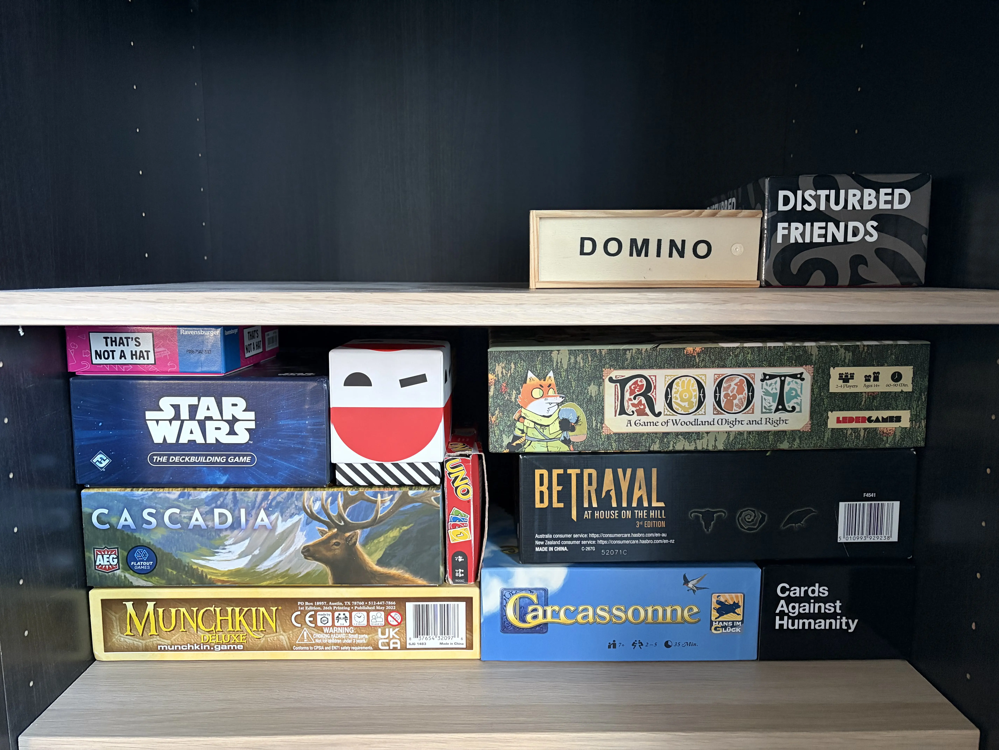

Hi! I'm Dino, a 22 year old Software Engineer / Game Programmer. I'm currently working at Handelsbanken as a COBOL Developer as a part of the Cross Border Payments team, I've previously worked at DICE where I worked on Battlefield 6, first as a Software Engineer Intern on the Core Systems team and then as a Software Engineer on the KeepGreen team. My game credits
My interest in game development started around the age of seven when I realized that the names of the people in the games that I was playing made games for a living. I've studied at The Game Assembly in Malmö where I gained valuable experience in teamwork and game creation. The Game Assembly is also where I built up a strong background in C++, ImGui, Scripting, AI and DirectX11.
I'm a real horror and sci-fi nut. My favorite games include Until Dawn, The Last Of Us and Resident Evil 7. When I'm not playing games you might find me taking long walks, playing boardgames with friends or watching the latest movies at the cinemas.
Now that I've been able to check Work on a Battlefield game off my bucket list I'm hoping
to someday have the opportunity to work on a horror or sci-fi game

My current board game collection :)